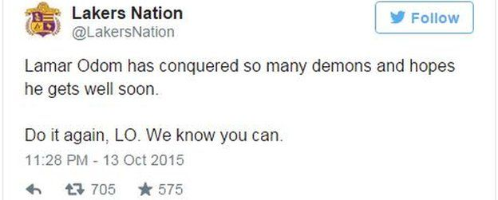
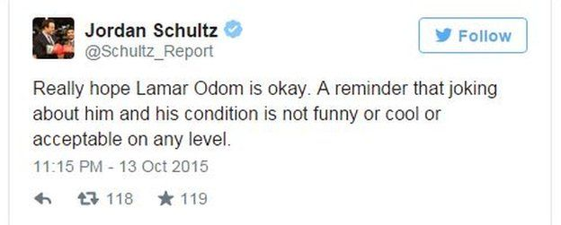

Police were called to Love Ranch brothel in Crystal, Nevada, after he was found unresponsive on Tuesday. The American had to be driven to hospital because he was too tall to be airlifted in a helicopter.
Mr Odom, 35, has played basketball for Miami, Dallas and the Los Angeles Lakers and Clippers. He also played for the US in the 2004 Athens Olympics, winning the bronze medal.
His condition is unknown but well-wishers tweeted their support following the news.
 Mr Odom, who was married to reality television star Khloe Kardashian, has long struggled with alcohol and drug addiction.
He was involved in a drink-driving case in 2013 and was suspended from the NBA for violating its anti-drug policy in 2000.
He and Ms Kardashian were married in 2009 in a ceremony that was taped for US television network E!.
They divorced in 2013.
Odom won the NBA championship with the Lakers in 2009 and 2010 and was named NBA Sixth Man of the Year in 2011. He last played in the NBA in 2013 with the Clippers.